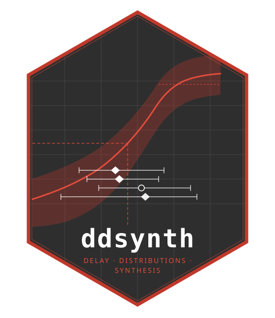

Update the log_phi prior mean from method-of-moments estimates
Source:R/utils.R
update_phi_prior.RdEstimates \(\phi\) from each dataset individually using moment-based
approximations (the same approach used in check 1 of
pre_inference_checks()), then overwrites log_phi_mean in stan_data
with the log of the median implied \(\phi\) across all datasets.
This replaces the fixed distribution-specific default with a value anchored
to the actual data scale, which is particularly useful for the gamma
distribution: the default prior mean (shape ≈ 12) can be far above the
data-implied shape (typically 2–8 for incubation periods), causing
gamma_lccdf to evaluate to log(0) = -Inf during Stan's initialisation
phase.
log_phi_sd is left unchanged so the prior remains diffuse around the
data-derived centre.
Arguments
- stan_data
A named list returned by
prepare_stan_data_from_datasets().- datasets
The same named list of datasets passed to
prepare_stan_data_from_datasets(). Used only for moment calculations.
Value
stan_data with log_phi_mean replaced by
log(median(implied_phi)). All other fields are unchanged. If no
finite implied-\(\phi\) values can be derived, a warning is issued and
stan_data is returned unmodified.
Details
Moment approximations per distribution:
- lognormal
\(\phi = \log(1 + (\mathrm{sd}/\mathrm{mean})^2)\) (approximate log-variance)
- gamma
\(\phi = (\mathrm{mean}/\mathrm{sd})^2\) (method-of-moments shape)
- Weibull
\(\phi\) solved numerically from the CV via \(CV^2 = \Gamma(1+2/k)/\Gamma(1+1/k)^2 - 1\)
For datasets that report only median + IQR, the SD is approximated as \((Q3-Q1)/1.35\); for median + range, as \((\max-\min)/4\); for frequency tables, the weighted SD of the (mid-)points is used.
Examples
if (FALSE) { # \dontrun{
stan_data <- prepare_stan_data_from_datasets(datasets_Mpox, dist_type = 2)
stan_data <- update_phi_prior(stan_data, datasets_Mpox)
fit <- rstan::sampling(stan_model, data = stan_data, chains = 4, iter = 2000)
} # }